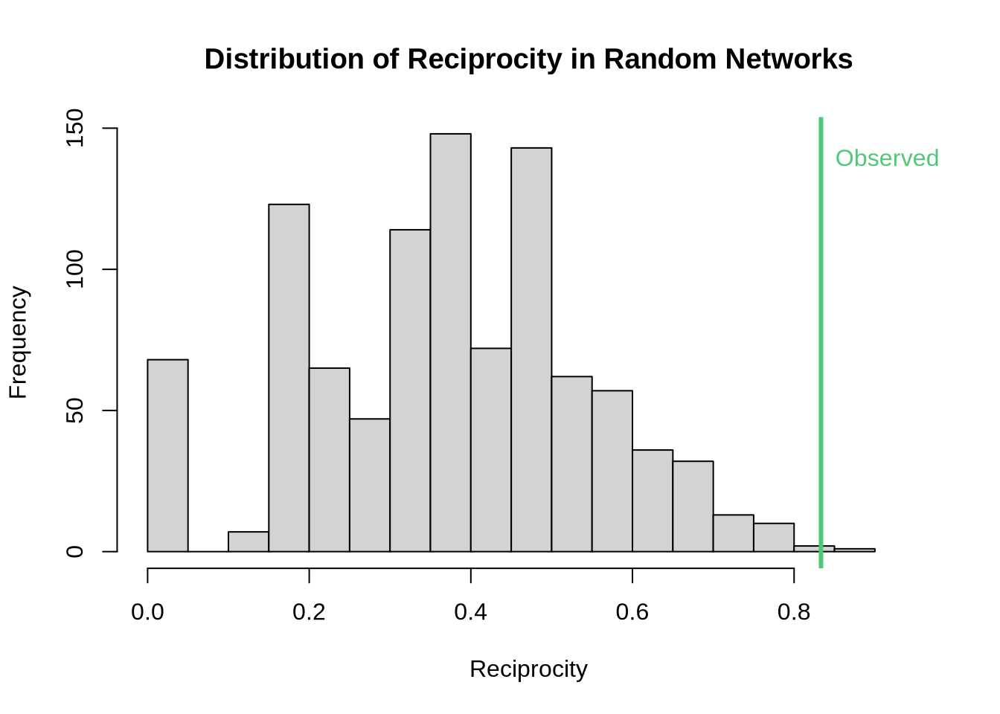

library(sna)
library(network)
set.seed(123) # for reproducibilityPractice Exercise: Graph Uniform Test
Week 4 - Network Analytics
Exercise Overview
In this exercise, we’ll explore the Graph Uniform Test (also known as network permutation test) using the R package sna. We’ll work with two toy networks:
- Friendship Network (undirected): Test for triadic closure
- Following Network (directed): Test for reciprocity
The uniform graph test helps us determine whether observed network properties differ significantly from what we would expect in random networks.
Setup
First, let’s load the required packages and set up our environment:
Part 1: Friendship Network - Testing Triadic Closure
Creating the Friendship Network
Let’s create a small undirected friendship network:
# Create friendship adjacency matrix (undirected)
friendship_mat <- matrix(0, nrow = 8, ncol = 8)
rownames(friendship_mat) <- colnames(friendship_mat) <- LETTERS[1:8]
# Add friendships (symmetric for undirected)
# A is friends with B, C, D
friendship_mat["A", c("B", "C", "D")] <- 1
friendship_mat[c("B", "C", "D"), "A"] <- 1
# B is friends with C, E
friendship_mat["B", c("C", "E")] <- 1
friendship_mat[c("C", "E"), "B"] <- 1
# C is friends with D, F
friendship_mat["C", c("D", "F")] <- 1
friendship_mat[c("D", "F"), "C"] <- 1
# D is friends with F, G
friendship_mat["D", c("F", "G")] <- 1
friendship_mat[c("F", "G"), "D"] <- 1
# E is friends with F
friendship_mat["E", "F"] <- 1
friendship_mat["F", "E"] <- 1
# Create network object
friendship_net <- network(friendship_mat, directed = FALSE)Visualize the Friendship Network
# Plot the friendship network
gplot(friendship_net,
vertex.col = "#c41c85",
vertex.cex = 2,
label = network.vertex.names(friendship_net),
label.col = "white",
label.cex = 0.8,
edge.col = "#D3D3D3",
edge.lwd = 2,
main = "Friendship Network",
mode = "fruchtermanreingold")
Testing for Triadic Closure
Triadic closure refers to the tendency for friends of friends to become friends. We’ll use the transitivity coefficient as our test statistic:
# Calculate observed transitivity (clustering coefficient)
obs_trans <- gtrans(friendship_net, mode = "graph")
cat("Observed transitivity:", round(obs_trans, 4), "\n")Observed transitivity: 0.4091 # Perform uniform graph test
# We'll generate 1000 random networks with same size and density
n_perms <- 1000
random_trans <- numeric(n_perms)
# Get network properties
n_nodes <- network.size(friendship_net)
n_edges <- network.edgecount(friendship_net)
for(i in 1:n_perms) {
# Generate random network with same number of nodes and edges
random_net <- rgraph(n_nodes,
m = 1,
tprob = n_edges/(n_nodes*(n_nodes-1)/2),
mode = "graph")
random_trans[i] <- gtrans(random_net, mode = "graph")
}
# Calculate p-value
p_value <- mean(random_trans >= obs_trans)
cat("\nP-value for triadic closure test:", round(p_value, 4), "\n")
P-value for triadic closure test: 0.285 # Visualize results
hist(random_trans,
breaks = 30,
main = "Distribution of Transitivity in Random Networks",
xlab = "Transitivity",
col = "lightgray",
xlim = c(0, max(c(obs_trans, random_trans)) * 1.1))
abline(v = obs_trans, col = "#c41c85", lwd = 3)
text(obs_trans, par("usr")[4] * 0.9, "Observed", col = "#c41c85", pos = 4)
Part 2: Following Network - Testing Reciprocity
Creating the Following Network
Now let’s create a directed network representing who follows whom:
# Create following adjacency matrix (directed)
following_mat <- matrix(0, nrow = 6, ncol = 6)
rownames(following_mat) <- colnames(following_mat) <- c("Alice", "Bob", "Carol", "Dave", "Eve", "Frank")
# Add following relationships (asymmetric for directed)
# Alice follows Bob and Carol
following_mat["Alice", c("Bob", "Carol")] <- 1
# Bob follows Alice and Dave
following_mat["Bob", c("Alice", "Dave")] <- 1
# Carol follows Alice, Bob, and Eve
following_mat["Carol", c("Alice", "Bob", "Eve")] <- 1
# Dave follows Bob and Frank
following_mat["Dave", c("Bob", "Frank")] <- 1
# Eve follows Carol and Frank
following_mat["Eve", c("Carol", "Frank")] <- 1
# Frank follows Eve
following_mat["Frank", "Eve"] <- 1
# Create network object
following_net <- network(following_mat, directed = TRUE)Visualize the Following Network
# Plot the following network
gplot(following_net,
vertex.col = "#50C878",
vertex.cex = 2,
label = network.vertex.names(following_net),
label.col = "white",
label.cex = 0.8,
edge.col = "#D3D3D3",
edge.lwd = 2,
edge.curve = 0.1,
arrowhead.cex = 0.8,
main = "Following Network (Directed)",
mode = "kamadakawai")
Testing for Reciprocity
Reciprocity measures the tendency for directed ties to be mutual (if A follows B, does B follow A?):
# Calculate observed reciprocity
obs_recip <- grecip(following_net, measure = "edgewise")
cat("Observed reciprocity:", round(obs_recip, 4), "\n")Observed reciprocity: 0.8333 # Perform uniform graph test
random_recip <- numeric(n_perms)
# Get network properties
n_nodes_dir <- network.size(following_net)
n_edges_dir <- network.edgecount(following_net)
for(i in 1:n_perms) {
# Generate random directed network with same number of nodes and edges
random_net_dir <- rgraph(n_nodes_dir,
m = 1,
tprob = n_edges_dir/(n_nodes_dir*(n_nodes_dir-1)),
mode = "digraph")
random_recip[i] <- grecip(random_net_dir, measure = "edgewise")
}
# Calculate p-value
p_value_recip <- mean(random_recip >= obs_recip)
cat("\nP-value for reciprocity test:", round(p_value_recip, 4), "\n")
P-value for reciprocity test: 0.002 # Visualize results
hist(random_recip,
breaks = 30,
main = "Distribution of Reciprocity in Random Networks",
xlab = "Reciprocity",
col = "lightgray",
xlim = c(0, max(c(obs_recip, random_recip)) * 1.1))
abline(v = obs_recip, col = "#50C878", lwd = 3)
text(obs_recip, par("usr")[4] * 0.9, "Observed", col = "#50C878", pos = 4)
Your Turn
Try these exercises to deepen your understanding:
# Exercise 1: Test degree centralization in the friendship network
# Hint: Use centralization() function
# Your code here
# Exercise 2: Test for in-degree centralization in the following network
# Hint: Use centralization() with appropriate parameters
# Your code here
# Exercise 3: Create your own network and test a different property
# Ideas: betweenness centralization, diameter, or density differences
# Your code hereKey Takeaways
- Graph Uniform Test compares observed network statistics to distributions from random networks
- The choice of null model (how we generate random networks) is crucial
- P-values indicate whether observed patterns could arise by chance
- Common tests include:
- Transitivity/Clustering: Friend-of-friend connections
- Reciprocity: Mutual connections in directed networks
- Centralization: Concentration of connections
- Assortativity: Similar nodes connecting